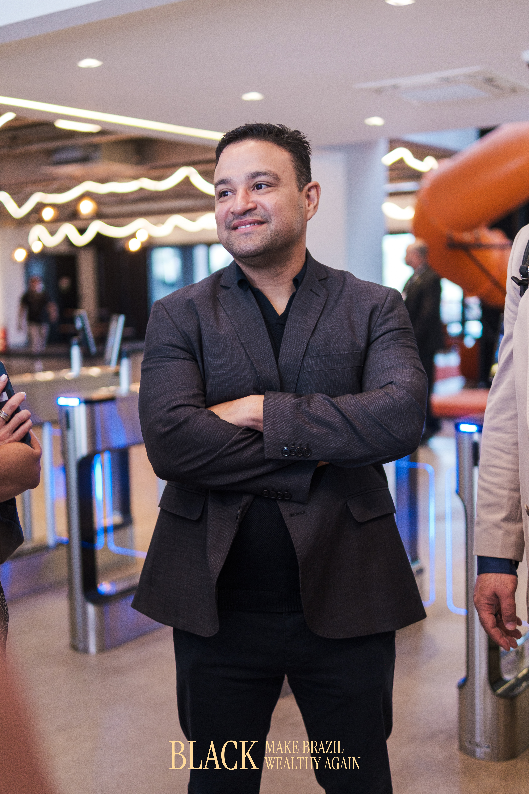

Você vai sair dessa imersão sabendo exatamente como aplicar IA no seu consultório, economizar horas por dia e escalar receita — sem aumentar um único paciente na agenda.
Atende 15 pacientes por dia e gasta mais de 3 horas isolado apenas digitando relatórios.
Chega em casa muito depois do jantar, encontrando os filhos já dormindo quase todos os dias.
A agenda vive lotada, não tem espaço para encaixes, mas a receita estagna no fim do mês.
A maioria da indústria enxerga que o teto da clínica médica é o volume linear de pacientes.
Nós focamos em:
Tempo e Escala.
O teto não é de pacientes. É de horas.
Teoria genérica sobre o ChatGPT.
"A IA vai transformar o futuro".
Slides de tecnologia inoperáveis.
Demo ao vivo com paciente real e resultado na lata.
IA limpando o gargalo do SEU consultório hoje.
Processo clínico + Automação + Seu Julgamento.
"Sem processo claro, não existe IA que resolva."
A IA envia um quiz ao paciente, absorve as queixas soltas e te entrega um mapa de sintomas perfeitamente hierarquizado. O paciente senta na cadeira, você já sabe a rota.
Menos anamnese robótica. Mais medicina.
Você olha no olho do paciente. Seu celular ouve tudo. A máquina interpreta, extrai os códigos CID, arquiteta a evolução, o diagnóstico lógico e o receituário na norma. Em segundos.
Consulta de 40min ➔ 15min.
Devolve 3h líquidas/dia.
Retenção de ouro. O paciente recebe um follow-up autônomo formatado lindamente via WhatsApp para documentar o antes/depois da dor. Ele visualiza a cura. Você conquista o LTV.
Landing page, artigos SEO e presença digital gerados em 3 cliques. Presença forte, zero agências caríssimas.
Garantir VagaIntegração API total. Agendamentos, NPS, Faturamento — quebra de silos de sistemas caros em 1 tela na sua mão.
Demo ao VivoMédico CRM Ativo. Sofreu nas trincheiras das UTIs e Clínicas engessadas.
Formação bruta: MBA em IA pelo MIT (Em Andamento) + Founder PMG Group.
Lidera base de 80k seguidores reais faturando/escalando 1.200 orgânicos/dia.
Equity em HealthTech/AI suportada por fundos de R$ 150M.

Uma oportunidade brutalmente assimétrica. Você compra o método, mas sai com o tempo de volta no bolso.
D.O.N Engine — Engineered for Precision Scale
O ecossistema D.O.N possui 3 vias de implementação.